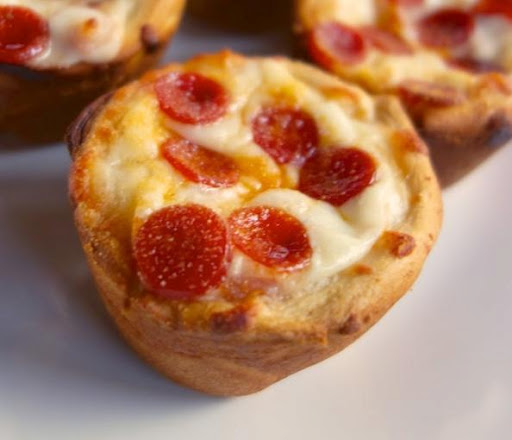

Pizza Cupcakes

Mini pizza, shaped like a cupcake
A great savory snack and a great addition to a game day buffet, customizable to your family's tastes with
various additions like ham, sausage, bell peppers, salami, mushrooms, and more!
Ingredients
- cooking spray
- 8 medium cherry tomaties
- 1 can of refrigerated pizza crust (11 ounce)
- 8 teaspoons of shredded mozzarella cheese
- 8 teaspoons of finely chopped red onion
- 8 slices of pepperoni, quartered
- 1/2 cup of pizza sauce
- Italian seasoning
- red pepper flakes
- garlic salt
Directions
- Preheat the oven to 400 degrees F (200 degrees C). Spray 8 cups of a muffin tin with cooking spray.
- Finely chop cherry tomatoes and drain any liquid. Set aside.
- Unroll pizza crust on a floured work surface and roll out thinly into a large rectangle. Using a 4-inch round cookie or biscuit cutter,
cut 8 circles in the dough. Place dough circles in the prepared muffin cups, pressing dough into the bottom and up the sides of each cup.
- Drop 1 teaspoon mozzarella into each cup. Top with 1 tablespoon of pizza sauce. Add chopped tomatoes and red onions. Add 1 tablespoon of
mozzarella to each cup, and top with pepperoni. Sprinkle each cup with Italian seasoning, red pepper flakes, and garlic salt to taste.
- Bake in the preheated oven until cheese is bubbling and melted, 14 to 15 minutes. Remove from the oven and let cool in
the tin for about 5 minutes. Remove from the tin and serve hot.
Return to main page